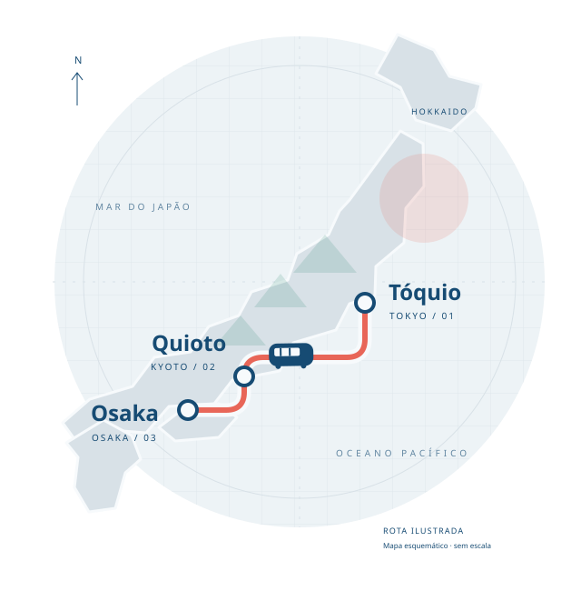
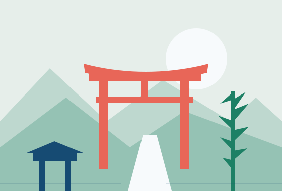
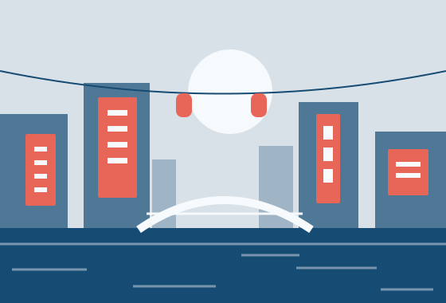

01 / KANTŌ
Tóquio
東京O encontro de todos os ritmos.
Da energia de Shibuya às ruas de Asakusa, a capital aproxima o cotidiano dos templos e a cidade que se reinventa.
Conheça Tóquio na JNTOUM PEQUENO GUIA PARA GRANDES DESCOBERTAS
Entre ruas que nunca param e jardins que pedem calma, existe um Japão para descobrir no seu ritmo.
Comece a explorarTóquio Quioto Osaka

ESCOLHA SUA PRÓXIMA PARADA
Uma porta de entrada para o país.
Deixe espaço para o que encontrar pelo caminho.
O encontro de todos os ritmos.
Da energia de Shibuya às ruas de Asakusa, a capital aproxima o cotidiano dos templos e a cidade que se reinventa.
Conheça Tóquio na JNTO
02 / KANSAIUm convite para diminuir o passo.
Templos, jardins e construções de madeira guardam histórias da antiga capital. Caminhe com atenção aos pequenos detalhes.
Conheça Quioto na JNTO
03 / KANSAIA cidade que recebe pela mesa.
As luzes de Dotonbori acompanham uma cidade conhecida pela comida. Entre uma caminhada e outra, descubra os sabores das ruas.
Conheça Osaka na JNTOALÉM DO CARTÃO-POSTAL
O lugar fica mais interessante quando a gente aprende a estar nele.
Em templos e santuários, siga a sinalização e respeite os espaços de oração. Cada lugar tem suas próprias orientações.
Um jardim, uma casa de chá ou uma rua tranquila: a viagem também acontece nos momentos em que você desacelera.
Artesanato, arquitetura e a vida de cada bairro revelam um país diverso. Tradição e novidade dividem o mesmo caminho.
MAIS UMA FORMA DE EXPLORAR
Três sabores para despertar a curiosidade.
O resto, você descobre à mesa.
ARROZ, EQUILÍBRIO E CUIDADO
O arroz temperado é o ponto de partida. Formatos e acompanhamentos abrem espaço para muitas combinações.
UMA TIGELA, MUITAS VERSÕES
Macarrão, caldo e coberturas se encontram em receitas que mudam de uma região para outra.
UM CLÁSSICO DE OSAKA
Bolinhos de massa com pedaços de polvo, preparados em uma chapa de cavidades arredondadas.
Próxima parada: descobrir o Japão.
Voltar ao início